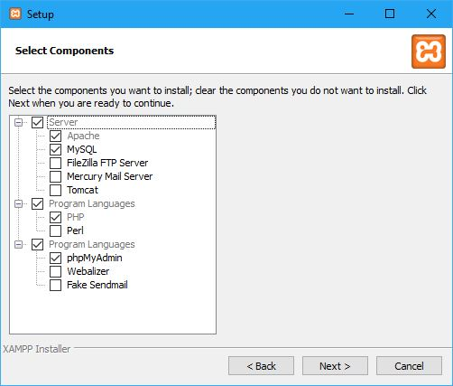
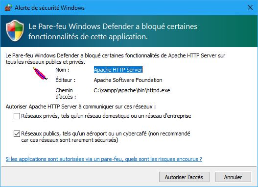
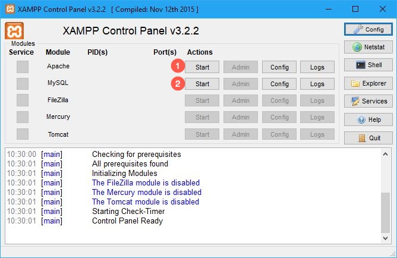
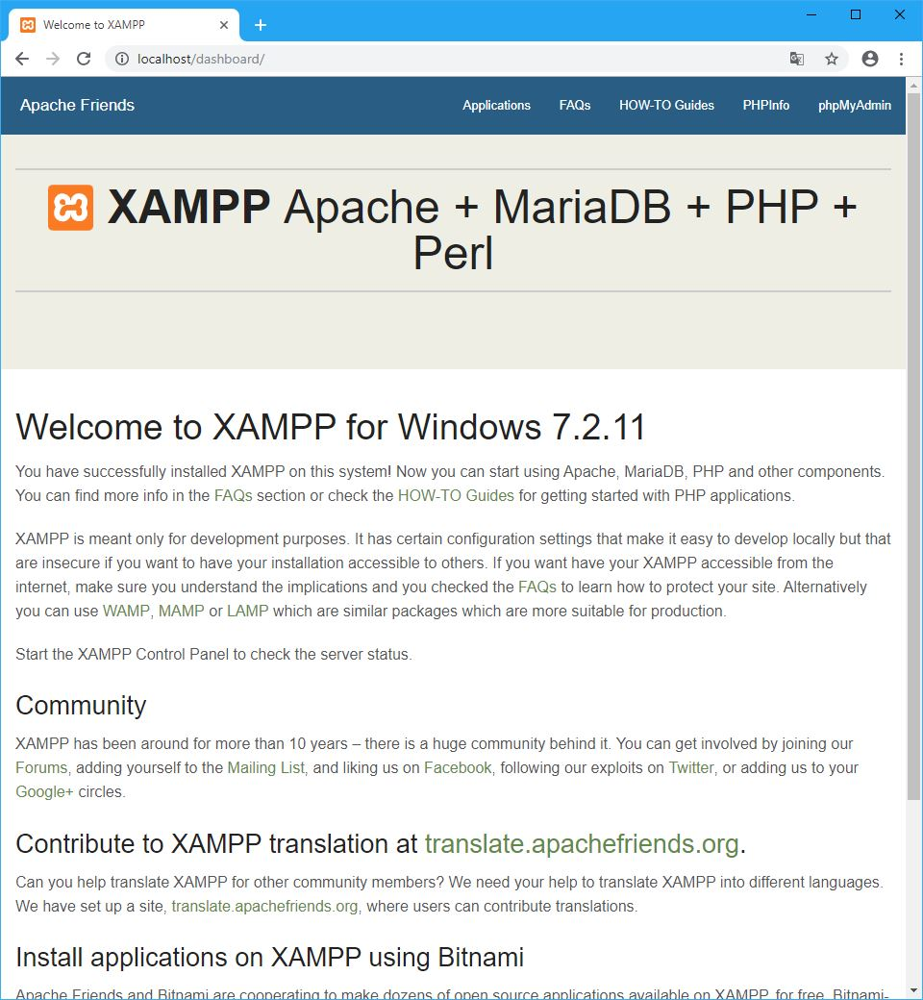
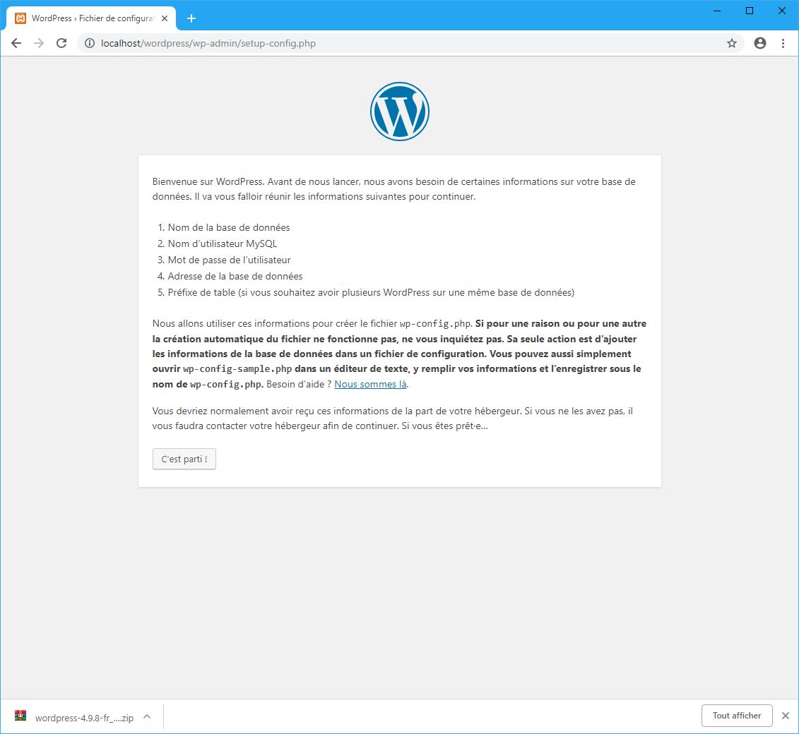
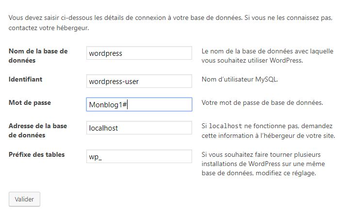
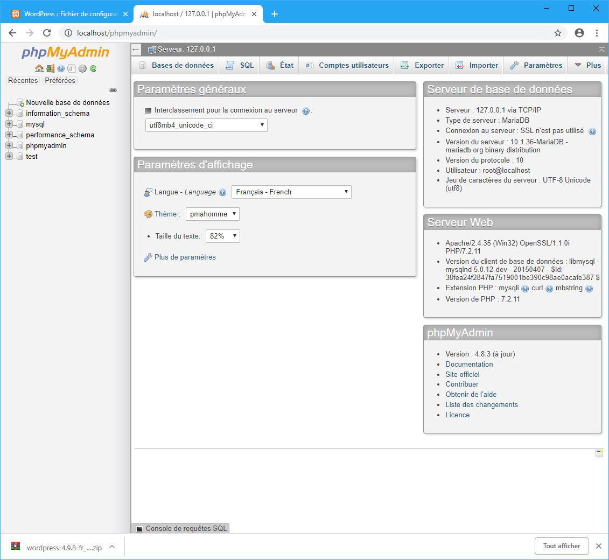
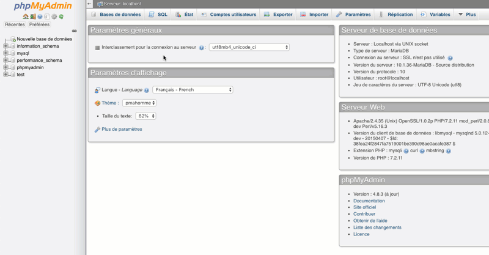
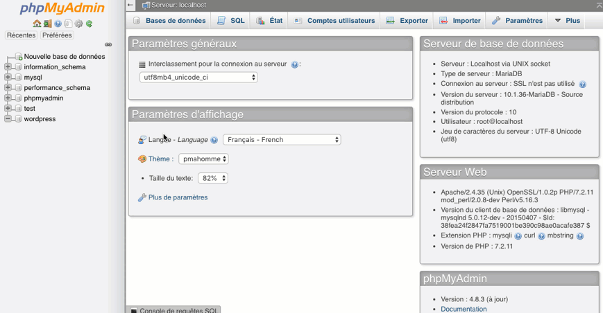

Guide Ultime de Wordpress
Pourquoi Wordpress ?
Vous allez besoin d'un site internet et vous ne savez pas comment en créer ? Vous êtes ici au bon endroit.
Dans cet article vous allez apprendre à créer un site web avec Wordpress. C'est un guide ultime pour les débutants ! Vous allez apprendre étape par étape comment créer un site Wordpress comme un professionnel.
Il existe plusieurs manières de créer un site Web, mais alors pourquoi est-ce que on utilise Wordpress ? Wordpress est un CMS Open source, donc gratuit, qui est simple et rapide à prendre en main. Vous pouvez créer facilement un blog, un site vitrine, un site e-commerce sans aucune notion de programmation. Oui ! C'est ça qui est génial avec Wordpress, c'est qu'il n'est pas nécessaire de connaître la programmation pour avoir son propre site web. C'est aussi un excellent choix pour mettre en place rapidement un site web.
Il propose également des milliers de modules, de thèmes et WordPress possède une immense communauté avec des forums et des tutos gratuits. Plus de 30% des CMS utilisé dans le monde est un Wordpress. Dernier point, Wordpress est régulièrement mis à jour pour améliorer la sécurité et apporter de nouvelles fonctionnalités.
Qu'est qu'un CMS ?
Un CMS (Content Management System) ou système de gestion de contenu en français est un logiciel qui facilite la création, la modification, l'organisation et la publication de contenu notamment sur internet. WordPress est un système de gestion de contenu qui vous permet de créer, de modifier votre contenu sur le web. WordPress permet aux utilisateurs de gérer eux même l'interface graphique de leur site.
Voici un aperçu des fonctionnalités d'un CMS comme Wordpress :
- Créer, modifier, gérer des utilisateurs.
- Permettre un utilisateur de créer, de modifier, de supprimer continu sans connaître la programmation.
- Ajouter de nouvelles fonctionnalités via des plugins et widgets.
- Installer de superbes thèmes sans connaissance graphique.
- Gérer vos URL pour améliorer votre référencement internet SEO.
Wordpress.org ou Wordpress.com ?
Vous pouvez installer votre site Wordpress sur ces 2 plate-formes. La différence entre les deux concerne l'hébergement du site. Avec worpdress.org vous devez télécharger le fichier source et l'installer vous-même sur votre propre serveur ou en local sur votre ordinateur. Tandis que sur Wordpress.com on s'occupe de toute l'installation. Il y a des avantages et des inconvénients :
Wordpress.com : Vous avez deux offres, une gratuite et une payante, l'offre gratuite en moins de cinq minutes vous avez votre premier site Internet par contre vous ne pourrez pas utiliser de nom de domaine personnalisé exemple www.monblog.com puisqu'un nom de domaine vous sera attribuée exemple monblog.wordpress.com. Pas terrible si Wordpress est utilisé pour une activité professionnelle... Vous ne pourrais pas non plus installer des thèmes ou des plugins personnalisés. L'offre payante moyennant quelques euros vous pourrez utiliser votre nom de domaine personnalisé www.monblog.com mais l'installation de thèmes et de plug-ins et limités
Wordpress.org : Installez vous-même votre Wordpress dans un hébergeur offre plus de flexibilité. Vous pourrez utiliser votre propre nom de domaine, installer des thèmes, des plugines mais surtout vous pouvez accéder à vos fichiers Wordpress. De nombreux sites Wordpress sont auto-hébergé avec cette solution Wordpress.org.
Cette documentation portera sur l'installation d'un Wordpress via wordpress.org. Nous allons installer nous-mêmes Wordpress sur notre propre serveur en local, c'est à dire sur notre ordinateur.
Etape 1 - Installer Wordpress avec Xampp
Bon avant de commencer, un peu des techniques, mais promis dans ce doil y en aura pas d'autre dans ce tutorial :). Pour installer Wordpress on aura besoin de créer un serveur web, en effet la structure de Wordpress est codé dans le langage PHP et sa base de données parle le SQL. Pour que PHP fonctionne il doit être installé sur un serveur web appellé Apache. Et Apache s'installe sur un système d'exploitation qui est Linux (Le Windows gratuit). On appelle ça un serveur LAMP (Linux, Apache, MySQL, PHP). c'est la clé pour faire tourner Wordpress. Rassurez vous on va faire tout ça en quelques clics grâce notamment avec Xampp. C'est quoi Xampp ? C'est une application qui vas créer virtuellement un serveur sur votre PC et nous installerons Wordpress dans ce dernier.
Note : Dans cet tutorial nous allons installer Xampp pour Windows, une documentation pour les utilisateurs de Mac est en cours de rédaction.
Télécharger Xampp :
Télécharger et installer Xampp :
- Allez sur le site Xampp
- Choisissez la version suivant si vous êtes sous Windows, Linux ou Mac
- Lancez l'installation.
Installer Xampp :
- Lancez l'installation.
- Nous allons installer uniquement ce que nous avons besoin : Apache, MySQL, PHP, phpMyAdmin 
- Sélectionnez votre dossier d'installation.
- Sous Windows, autorisez le pare-feu 
- Cliquez sur le bouton Finish.
Démarrer Xampp :
- Choisissez la langue Anglaise ou Allemande.
- Démarrez le serveur Apache et MySQL. 
- Lancez Chrome ou Firefox, dans la barre d'url tapez l'adresse : localhost/dashboard , la page par défaut du serveur Xampp apparaît. Notre serveur fonctionne 🎉, on va maintenant installer Wordpress dans notre serveur. 
Télécharger Wordpress :
- Allons sur le site de Wordpress.org et cliquez sur le bouton Télécharger Wordpress.
- Décompressez le fichier téléchargé, déplacer le dossier wordpress dans le dossier de votre serveur, dans notre exemple l'adresse est C:/xampp/htdocs.

Démarrer l'installation de Wordpress :
- Retournons sur notre navigateur et tapons localhost/wordpress. On est aussitôt redirigé sur la page d'installation de Wordpress. Cliquez sur le bouton : C'est parti ! 👏 
Créer une base de donnée avec PHPmyAdmin :
- Wordpress a besoin d'une base de données pour stocker du contenu. Nous allons et utiliser PHPmyAdmin pour créer une base de données. 
- Dans votre navigateur internet, ajoutez un nouvel onglet ou ouvrez une nouvelle fenêtre, allons à cette adresse : localhost/phpmyadmin 
- Dans le menu cliquez sur Bases de données, donnez un nom à la base de donnée, dans notre exemple nous donnons wordpress, puis sélectionnez utf8_general_ci. Cliquez sur Créer pour valider. 
Créer un utilisateur pour la base de donnée :
- Sur la colonne de gauche, cliquez sur la base de données que vous souhaitez utiliser.
- Dans le menu cliquez sur Privilèges, puis Ajouter un compte utilisateur.
- Ajouter un nom d'utilisateur, sélectionnez Local, donnez un mot de passe, enfin cliquez sur Exécuter. 
Configurer l'installation de Wordpress
- Retournons sur notre page Wordpress localhost/wordpress